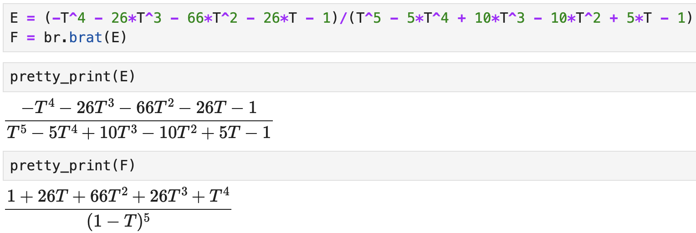

brat
The class we use to format rational functions is brat, and the kinds of rational functions accepted satisfy the main assumption: they can be expressed as
[
\dfrac{F(\bm{X})}{c\bm{X}^{\beta} \prod_{i=1}^m(1 - \bm{X}^{\alpha_i})},
]
where the following hold:
- $\bm{X}=(X_1, \dots, X_n)$ are variables,
- $F(\bm{X})\in \mathbb{Z}[\bm{X}]$,
- $c\in \N$,
- $\beta\in\N_0^n$,
- $m\in\N_0$,
- $\alpha_i\in\mathbb{Z}^n$, where $\bm{X}^{\alpha_i} = X_1^{\alpha_{i,1}}\cdots X_n^{\alpha_{i,n}}$.
This includes all elements of $\mathbb{Q}[\bm{X}^{\pm 1}]$ for example.
The keyword arguments for brat are
rational_expression: the rational function (default:None),numerator: the numerator polynomial of the rational function (default:None),denominator: the denominator polynomial of the rational function (default:None),denominator_signature: the dictionary of data for the denominator (default:None),fix_denominator: whether to keep the given denominator fixed---does not apply to coefficients (default:True),increasing_order: whether to display polynomials in increasing degree (default:True),hide_monomial: whether to absorb the monomial in the denominator into the numerator (default:True).
Additional notes. The denominator_signature must be a dictionary whose keys are
"coefficient": an integer,"monomial": a tuple of non-negative integers with length matching the number of variables,"factors": a dictionary whose keys are tuples of integers with values of non-negative integers.
Examples of acceptable denominator_signature are given in Denominator Signature and in the denominator_signature method.
Algebraic operations and relations
One can use the usual algebraic operations with brat: add, subtract, multiply, divide (i.e. 'true' divide), powers. The Boolean relations == and != can also be used. When adding a brat with something else, we attempt to make another brat object.
Warning: we cannot do anything about algebraic operations where the first object is not a brat object. For example, if F is a brat but G is a polynomial in SageMath, then G + F may raise errors, while F + G will attempt to add the two objects—other errors may arise.
Examples
We build many examples using the brat constructor.
Introduction
We express the rational function [ f=\dfrac{1 + xy + x^2y^2}{(1 - x)(1 - y)}. ] First we write this in the usual way, using symbolic variables.
sage: x, y = var('x y')
sage: f = (1 + x*y + x^2*y^2)/((1 - x)*(1 - y))
sage: f
(x^2*y^2 + x*y + 1)/((x - 1)*(y - 1))
Now we build a brat from $f$.
sage: F = br.brat(f)
sage: F
(1 + x*y + x^2*y^2)/((1 - y)*(1 - x))
Prescribed Denominator I
Now we write the rational function [ g = \dfrac{1 + 4t + 6t^2 + 4t^3 + t^4}{(1 - t)(1 - t^2)(1 - t^3)(1 - t^4)} . ]
sage: t = polygens(QQ, 't')[0]
sage: g = (1 + 4*t + 6*t^2 + 4*t^3 + t^4)/((1 - t)*(1 - t^2)*(1 - t^3)*(1 - t^4))
sage: g
(t^2 + 2*t + 1)/(t^8 - 3*t^7 + 4*t^6 - 5*t^5 + 6*t^4 - 5*t^3 + 4*t^2 - 3*t + 1)
Now we build a brat.
sage: G = br.brat(g)
sage: G
(1 + 2*t - 2*t^3 - t^4)/((1 - t)^3*(1 - t^3)*(1 - t^4))
We could instead insist that the denominator $(1 - t)(1 - t^2)(1 - t^3)(1 - t^4)$ stay fixed.
sage: G = br.brat(
numerator=1 + 4*t + 6*t^2 + 4*t^3 + t^4,
denominator=(1 - t)*(1 - t^2)*(1 - t^3)*(1 - t^4)
)
sage: G
(1 + 4*t + 6*t^2 + 4*t^3 + t^4)/((1 - t)*(1 - t^2)*(1 - t^3)*(1 - t^4))
By default, fix_denominator is set to True. Setting this to False yields the following.
sage: br.brat(
numerator=1 + 4*t + 6*t^2 + 4*t^3 + t^4,
denominator=(1 - t)*(1 - t^2)*(1 - t^3)*(1 - t^4),
fix_denominator=False
)
(1 + 2*t - 2*t^3 - t^4)/((1 - t)^3*(1 - t^3)*(1 - t^4))
Prescribed denominator II
We construct the following rational function a few different ways: [ P = \dfrac{1 + 6T + 11T^2 + 6T^3}{(1 - T^4)}. ]
sage: T = polygens(QQ, 'T')[0]
sage: P = br.brat((1 + 6*T + 11*T^2 + 6*T^3)/(1 - T^4))
sage: P
(1 + 5*T + 5*T^2 - 5*T^3 - 6*T^4)/((1 - T)*(1 - T^4))
By doing the above construction, we added a factor of $1-T$. This is because SageMath automatically removes common factors in the numerator and denominator of the quotient (1 + 6*T + 11*T^2 + 6*T^3)/(1 - T^4). The resulting denominator is $(T - 1)(T^2 + 1)$.
sage: P = br.brat(
numerator=1 + 6*T + 11*T^2 + 6*T^3,
denominator=(1 - T)^4
)
sage: P
(1 + 6*T + 11*T^2 + 6*T^3)/(1 - T)^4
By separating the denominator (and fixing it by default), we get the desired expression.
We can also switch the order of how polynomials are displayed. Instead of displaying the terms in a weakly increasing-degree sequence, we can make it weakly decreasing.
sage: P = br.brat(
numerator=1 + 6*T + 11*T^2 + 6*T^3,
denominator=(1 - T)^4,
increasing_order=False
)
sage: P
(6*T^3 + 11*T^2 + 6*T + 1)/(1 - T)^4
Denominator Signature
We construct the following rational function using a denominator signature: [ h = \dfrac{1}{8(1 - X_1)(1 - X_2)^3(1 - X_1X_2X_3)^4(1 - X_1X_2X_3^2)}. ]
sage: R = PolynomialRing(QQ, 'X1,X2,X3')
sage: d_sig = {
"coefficient": 8,
"monomial": (0, 0, 0),
"factors": {
(1, 0, 0): 1,
(0, 1, 0): 3,
(1, 1, 1): 4,
(1, 1, 2): 1
}
}
sage: H = br.brat(numerator=R(1), denominator_signature=d_sig)
sage: H
1/(8*(1 - X1)*(1 - X2)^3*(1 - X1*X2*X3)^4*(1 - X1*X2*X3^2))
Negative Exponents I
We express the Igusa zeta function associated with the braid arrangement: [ Z_2 = \dfrac{1 - 3q^{-1} + 2q^{-2} + 2q^{-1}t - 3q^{-2}t + q^{-3}t}{(1 - q^{-1}t)(1 - q^{-2}t^3)} . ]
See Maglione–Voll for details.
sage: q, t = var('q t')
sage: Z2 = (1 - 3*q^-1 + 2*q^-2 + 2*q^-1*t - 3*q^-2*t + q^-3*t)/((1 - q^-1*t)*(1 - q^-2*t^3))
sage: Z2
(2*t/q - 3/q - 3*t/q^2 + 2/q^2 + t/q^3 + 1)/((t^3/q^2 - 1)*(t/q - 1))
sage: br.brat(Z2)
(q^-3*t + 2*q^-2 - 3*q^-2*t - 3*q^-1 + 2*q^-1*t + 1)/((1 - q^-1*t)*(1 - q^-2*t^3))
To get the output a little closer to how we have it formatted above, we can set increasing_order to False.
sage: br.brat(Z2, increasing_order=False)
(1 + 2*q^-1*t - 3*q^-1 - 3*q^-2*t + 2*q^-2 + q^-3*t)/((1 - q^-1*t)*(1 - q^-2*t^3))
Negative Exponents II
We express the ask zeta function associated with the complete graph on four vertices: [ W_{minus} = \dfrac{q^3 - t}{q^3(1 - t)(1 - qt)}. ]
See Rossmann–Voll for details.
sage: q, t = var('q t')
sage: W_minus = (q^3 - t)/(q^3*(1 - t)*(1 - q*t))
sage: W_minus
(q^3 - t)/((q*t - 1)*q^3*(t - 1))
sage: br.brat(W_minus)
-(q^-3*t - 1)/((1 - t)*(1 - q*t))
If we set increasing_order to False, then the 1 will be the leading term, and since it has a positive coefficient, we will avoid the negative scalar in front.
sage: br.brat(W_minus, increasing_order=False)
(1 - q^-3*t)/((1 - t)*(1 - q*t))
Moreover, if we want to make the factor $q^3$ in the denominator explicit, we can set hide_monomial to False.
sage: br.brat(W_minus, increasing_order=False, hide_monomial=False)
(q^3 - t)/(q^3*(1 - t)*(1 - q*t))
Pretty Print (pretty_print)
When applying the SageMath function pretty_print (or when it is on) in a Jupyter notebook, the brat will be displayed with $\LaTeX$.
There are many ways to set up a Jupyter notebook. One way is to run the following.
$ sage -n jupyter
In our Jupyter notebook, we observe the following. 